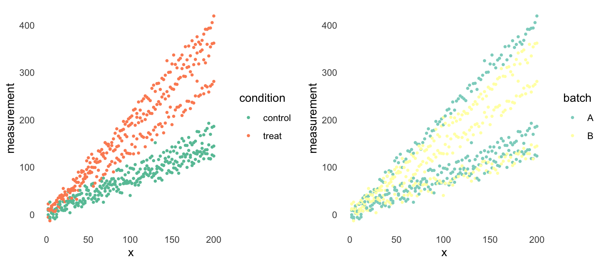
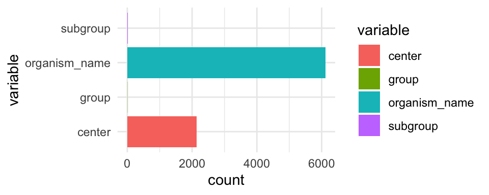
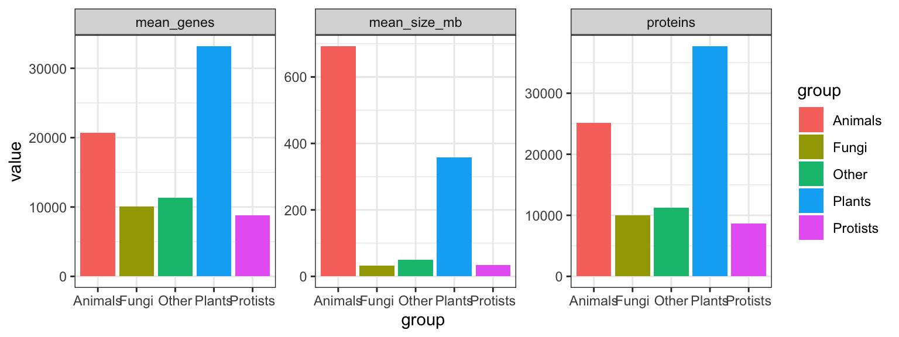

Chapter 7 Forbine tables, iterations og funktioner

7.1 Inledning og læringsmålene
7.1.1 Læringsmålene
I skal være i stand til at:
- Benytte
left_join()til at tilføje sample information til datasættet. - Anvende
map()- funktioner til at udføre beregninger iterativt over flere kolonner ognest()til at lave analyser over forskellige dele af datasættet. - Kombinere
map()med custom funktioner til at forbedre reproducerbarhed i analyser.
7.1.2 Introduktion til Chapter
Det er ofte tilfældet indenfor biologi, at man har sine data i den ene dataramme og nogle ekstra sample oplysninger i den anden dataramme. Derfor vil vi gerne have en måde, at integrere de to datarammer i R, som gøre, at vi kan inddrage de ekstra oplysninger når vi lave plots af de data.
Det er også ofte tilfældet indenfor biologi, at man har sine data værdier over forskellige kolonner som refererer til rigtige mange samples, replikater eller konditioner. Vi beskæftiger os med de map() funktioner, som kan benyttes til at lave iterativ baserende analyser i R.
7.1.3 Video ressourcer
- Video 1: left_join of tables with extra sample information and plot
Link her hvis det ikke virker nedenunder: https://player.vimeo.com/video/549630870
- Video 2: Introduction to map functions for iterating over columns
Link her hvis det ikke virker nedenunder: https://player.vimeo.com/video/549630848
- Video 3: Introduction to custom functions and combining them with map
Link her hvis det ikke virker nedenunder: https://player.vimeo.com/video/549630825
- Video 4: Introduction to nest functions for breaking data into sections
Link her hvis det ikke virker nedenunder: https://player.vimeo.com/video/549630798
7.2 Tilføje sample oplysninger med left_join()
For at bedste demonstrere scenariet, har jeg lavet nogle fiktiv data fra et eksperiment, hvor man indhenter målinger over 100 tidspunkter, for to konditioner (treatment og control). Der er tre replikater til hver kondition. Jeg har også lavet en table, som viser forskellige oplysninger om de samples, som ikke er med i de egentlige data.
data_exper <- read.table("https://www.dropbox.com/s/hb7m63agz4jti6w/fictive_left_join.txt?dl=1",header=T)
samples <- c("control_rep1", "control_rep2", "control_rep3","treat_rep1", "treat_rep2", "treat_rep3")
condition <- gsub("(.+)_rep[1|2|3]","\\1",samples)
replicate <- gsub(".+_rep([1|2|3])","\\1",samples)
batch <- c("A","B","A","B","A","B")
sample_info <- data.frame("sample"=samples,"condition"=condition,"replicate"=replicate,"batch"=batch)Lad os kigge på datasættet data_expr:
head(data_exper)## x control_rep1 control_rep2 control_rep3 treat_rep1 treat_rep2 treat_rep3
## 1 2 -0.6222110 12.112904 8.624800 10.504877 -5.793916 22.26163
## 2 4 -5.7463250 26.082811 -8.929131 -13.287492 8.068806 11.50306
## 3 6 2.7762770 3.834661 14.663878 16.328472 18.107530 10.11893
## 4 8 5.4739947 0.344840 -6.184393 7.770677 7.311946 20.78667
## 5 10 -9.1930518 10.890655 6.855960 6.299163 21.456005 23.81832
## 6 12 0.2531807 13.079257 -5.423093 8.472125 27.178203 29.94170Lad os også kigge på de sample oplysninger, som kan være nyttige at inddrage i vores analyse/plotter for at undersøge eventualle batch effekter osv.
head(sample_info)## sample condition replicate batch
## 1 control_rep1 control 1 A
## 2 control_rep2 control 2 B
## 3 control_rep3 control 3 A
## 4 treat_rep1 treat 1 B
## 5 treat_rep2 treat 2 A
## 6 treat_rep3 treat 3 BSom man kan se, har vi en kolon som viser hvilke kondition og replikate vores samples kommer fra (det er også oplagt fra sample navne her, men det er ikke altid), samt den batch, hver sample kommer fra. For at integrere de to tables, skal vi første have de data i Long form.
data_long <- data_exper %>% pivot_longer(cols= -x,
names_to="sample",
values_to="measurement")
head(data_long)## # A tibble: 6 × 3
## x sample measurement
## <int> <chr> <dbl>
## 1 2 control_rep1 -0.622
## 2 2 control_rep2 12.1
## 3 2 control_rep3 8.62
## 4 2 treat_rep1 10.5
## 5 2 treat_rep2 -5.79
## 6 2 treat_rep3 22.37.2.1 Fuktionen left_join() fra dplyr-pakken
Funktionen left_join() er en del af pakken dplyr som vi har arbejdet meget med indtil videre i kurset. Her er en meget kort beskrivelse af de fire hoved join funktioner.
| funktion | Beskrivelse |
|---|---|
left_join() |
Join matching rows from second table to the first |
right_join() |
Join matching rows from the first table to the second |
inner_join() |
Join two tables, returning all rows present in both |
full_join() |
Join data with all possible rows present |
Vi fokuserer her på funktionen left_join() fordi den er den meste brugbart i biologiske data analyser. Her er en grafiske demonstration af left_join():

Figure 7.1: left_join graphical demonstration (source https://mgimond.github.io/ES218/Week03c.html)
7.2.2 Anvende left_join() for vores fiktiv dataset.
For at bedste forstå funktionen left_join() skal vi afprøve den med vores datasæt. Her tager vi udgangspunkt i data_long og så tilføjer de data fra sample_info. Her angiver vi by = "sample" fordi det er navnet til kolonnen som vi geerne vil bruge til at forbinde de to datarammer - altså, det er med i begge to datarammer, så left_join() kan bruge den som en slags nøgle til at vide, hvor alle de forskellige oplysninger skal tilføjes.
data_long_join <- data_long %>% left_join(sample_info,by = "sample")
data_long_join## # A tibble: 600 × 6
## x sample measurement condition replicate batch
## <int> <chr> <dbl> <chr> <chr> <chr>
## 1 2 control_rep1 -0.622 control 1 A
## 2 2 control_rep2 12.1 control 2 B
## 3 2 control_rep3 8.62 control 3 A
## 4 2 treat_rep1 10.5 treat 1 B
## 5 2 treat_rep2 -5.79 treat 2 A
## 6 2 treat_rep3 22.3 treat 3 B
## 7 4 control_rep1 -5.75 control 1 A
## 8 4 control_rep2 26.1 control 2 B
## 9 4 control_rep3 -8.93 control 3 A
## 10 4 treat_rep1 -13.3 treat 1 B
## # … with 590 more rowsNu at vi har fået forbundet de to datarammer, kan man inddrage de ekstra oplysninger vi har fået i et plot. Her laver vi et plot med en farve til hver kondition og et plot med en farve til hver batch.
gg1 <- ggplot(data_long_join,aes(y=measurement,x=x,colour=condition)) +
geom_point(size=0.75) +
theme_minimal() +
scale_color_brewer(palette = "Set2") +
theme(panel.grid = element_blank())
gg2 <- ggplot(data_long_join,aes(y=measurement,x=x,colour=batch)) +
geom_point(size=0.75) +
theme_minimal() +
scale_color_brewer(palette = "Set3") +
theme(panel.grid = element_blank())
library(gridExtra)
grid.arrange(gg1,gg2,ncol=2)
Vi kan se, at man kan godt kan skelne imellem de målingerne for de to konditioner, men ikke så meget for de to batches. Det betyder, at vores kondition effekt er stærkere end den batch effekt, som er en god tegn for vores analyse af datasættet.
7.3 Iterativ processer med map() fuktioner
Når man lave en interativ proces, vil man gerne lave samme ting gentagne gange. Det kan være for eksempel, at vi har ti variabler og vi gerne vil beregne middelværdien for hver variable. Indenfor biologi er det et meget realistisk scenarie, for eksempel hvis man har mange replikater, konditioner eller tidspunkter og gerne vil beregne noget på dem alle sammen - det kan være at man gerne vil normalisere ekspressionsniveauerne over forskellige gener, osv.
I resten af dette kapitel, lad os beskæftige os med en datasæt der hedder eukaryotes, som indeholder meget oplysninger om forskellige organismer som hører til eukaryotes - for eksempel deres navne, gruppe, sub-gruppe, antal proteins/genes, genom størrelse og så videre. Man kan få de data indlæste med følgende kommando og se en list over for de forskellige kolon navne nedenfor.
eukaryotes <- read_tsv("https://www.dropbox.com/s/3u4nuj039itzg8l/eukaryotes.tsv?dl=1")## Rows: 11508 Columns: 19
## ── Column specification ────────────────────────────────────────────────────────
## Delimiter: "\t"
## chr (10): organism_name, bioproject_accession, group, subgroup, assembly_ac...
## dbl (7): taxid, bioproject_id, size_mb, gc, scaffolds, genes, proteins
## date (2): release_date, modify_date
##
## ℹ Use `spec()` to retrieve the full column specification for this data.
## ℹ Specify the column types or set `show_col_types = FALSE` to quiet this message.Vi tager udgangspunkt i kun fire variabler, så for at gøre tingene mere enkel, har jeg brugt select() til at kun får de fire variabler organism_name,center,group og subgroup i en dataramme.
#eukaryotes_full <- eukaryotes
eukaryotes_subset <- eukaryotes %>% select(organism_name, center, group, subgroup)
eukaryotes_subset %>% head()## # A tibble: 6 × 4
## organism_name center group subgroup
## <chr> <chr> <chr> <chr>
## 1 Pyropia yezoensis Ocean University Other Other
## 2 Emiliania huxleyi CCMP1516 JGI Prot… Other P…
## 3 Arabidopsis thaliana The Arabidopsis Information Resourc… Plan… Land Pl…
## 4 Glycine max US DOE Joint Genome Institute (JGI-… Plan… Land Pl…
## 5 Medicago truncatula International Medicago Genome Annot… Plan… Land Pl…
## 6 Solanum lycopersicum Solanaceae Genomics Project Plan… Land Pl…Lad os forestille os, at vi er interesseret i antallet af unikke organismer (variablen organism_name). Der er en funktion der hedder n_distinct som beregner antallet af unikke værdier i en vector/variable. Her vælger vi organism_name og så tilføjer n_distinct().
eukaryotes_subset %>%
select(organism_name) %>%
n_distinct()## [1] 6111Lad os forestille os, at vi også er interesseret i antallet af unikke værdier i variablerne center, group og subgroup - som er de tre andre kolonner i datasættet. Vi har forskellige muligheder:
- Skrive dem ud - men hvad nu hvis vi havde 100 variabler at håndtere?
eukaryotes_subset %>% select(organism_name) %>% n_distinct()
eukaryotes_subset %>% select(center) %>% n_distinct()
eukaryotes_subset %>% select(group) %>% n_distinct()
eukaryotes_subset %>% select(subgroup) %>% n_distinct()## [1] 6111
## [1] 2137
## [1] 5
## [1] 19- Vi kræver en mere automatiske løsning på det. Vi bruger ikke tid på det her, men der er den traditionele programmering løsning: for loop, som fungerer også i R:
col_names <- names(eukaryotes_subset)
for(column_name in col_names)
{
print(eukaryotes_subset %>%
select(column_name) %>%
n_distinct())
}## Note: Using an external vector in selections is ambiguous.
## ℹ Use `all_of(column_name)` instead of `column_name` to silence this message.
## ℹ See <https://tidyselect.r-lib.org/reference/faq-external-vector.html>.
## This message is displayed once per session.## [1] 6111
## [1] 2137
## [1] 5
## [1] 19Man i teorien kan holde sig til for loops men jeg vil gerne præsentere den tidyverse løsning, som bliver mere intuitiv og nemmere for ændre at læse koden når man er vant til det (det integrerer også bedre med de andre tidyverse pakker).
7.3.1 Introduktion til map() funktioner
Den tidyverse løsning til at lave iterativ processer er såkaldte map() funktioner, som er en del af pakken purrr og er stadig relative nye. Jeg introducerer dem her frem for de base-R løsninger ikke bare fordi de er tidyverse, men fordi de er en meget fleksibelt og nemt at forstå tilgang, når man vænner sig til dem.
Jeg viser hvordan de fungere igennem eukaryotes og bagefter introducerer dem i konteksten af custom funktioner og nest() som kan bruges til at opdele datasættet indtil forskellige dele (ovenpå hvori man kan lave flere iterativ processer).
map() er det tidyverse svar til en for loop (eller apply hvis man har kendskab til det). Man anvender map() ved at angiv funktionen navn n_distinct indenfor map(), og map() beregner n_distinct() for hver kolon i datasættet.
eukaryotes_subset %>% map(n_distinct) #do 'n_distinct' for every single column## $organism_name
## [1] 6111
##
## $center
## [1] 2137
##
## $group
## [1] 5
##
## $subgroup
## [1] 19Så kan man se, at vi har fået en list tilbage, med en tal som viser antallet af unikke værdier til hver af de fire kolonner. Det fungerer lidt som den base-R funktion apply, men med apply skal man bruge 2 i anden plads til at fortælle, at vi gerne vil iterate over kolonnerne.
apply(eukaryotes_subset,2,n_distinct)## organism_name center group subgroup
## 6111 2137 5 19Bemærk at vi har fået her en vector af tal tilbage, men vi fået en list med map. Der er faktisk andre varianter af map som kan benyttes til at give resultatet som andre data typer. For eksempel, kan man bruge map_dbl() til at få en double dbl tilbage - en vector af tal ligesom vi fået med apply i ovenstående.
# Apply n_distinct to all variables, returning a double
eukaryotes_subset %>% map_dbl(n_distinct)## organism_name center group subgroup
## 6111 2137 5 19Man kan også bruge map_df() for at få en dataramme (tibble) tilbage - det er særligt nyttigt for os, fordi vi tager altid udgangspunkt i en dataramme når vi skal få lavet et plot.
# Apply n_distinct to all variables, returning a dataframe
eukaryotes_subset %>% map_df(n_distinct)## # A tibble: 1 × 4
## organism_name center group subgroup
## <int> <int> <int> <int>
## 1 6111 2137 5 19For eksempel, kan man tilføje de tal fra map_df direkte ind i et ggplot.
eukaryotes_subset %>%
map_df(n_distinct) %>%
pivot_longer(everything(), names_to = "variable", values_to = "count") %>%
ggplot(aes(x = variable, y = count,fill = variable)) +
geom_col() +
coord_flip() +
theme_minimal()
7.4 Custom functions
Vi kan lave vores egne funktioner og betnytter dem indenfor map til at yderligere øge fleksibiliteten i R. For eksempel, kan det være at vi har en bestemt idé overfor, hvordan vi gerne vil normalisere vores data, og der eksisterer ikke en relevant funktion indenfor R i forvejen.
7.4.1 Simple functions
Vi starter med en simpel funktion fra base-R og så forklare den i den table bagefter. Vi bruger mest en anden form af funktioner i tidyverse som vi kigger på næste, men koncepten er den samme.
my_function <- function(.x)
{
return(sum(.x)/length(.x))
}| Kode | Beskrivelse |
|---|---|
my_function_name |
funktion navn |
<- function(.x) |
fortæl R, at vi lave en funktion med nogle data .x |
sum(.x)/length(.x) |
brug data .x til at beregne middelværdi |
return() |
hvad funktionen skal output - her middelværdi |
Lad også afprøve vores nye funccion ved at beregne den gennemsnitlige værdi for Sepal.Length i iris.
my_function(iris$Sepal.Length)
mean(iris$Sepal.Length)## [1] 5.843333
## [1] 5.8433337.4.2 Custom functions with mapping
Indenfor den tidyverse bruger man en lidt anden måde at skrive samme funktion på.
my_function <- ~ sum(.x)/length(.x)~betyder at vi definere en funktion.xbetyder de data, der vi angiver funktionen (for eksempel variablenSepal.Lengthfrairis). Man bruger den symbol.xhver gang og R ved automatiske hvad det betyder.
Vi kan bruge my_function indenfor map() for at beregne den gennemsnitlige værdi for alle variabler (uden Species), og vi kan se at vi få tilsvarende resultat til funktionen mean():
iris %>%
select(-Species) %>%
map_df(my_function)
iris %>%
select(-Species) %>%
map_df(mean)## # A tibble: 1 × 4
## Sepal.Length Sepal.Width Petal.Length Petal.Width
## <dbl> <dbl> <dbl> <dbl>
## 1 5.84 3.06 3.76 1.20
## # A tibble: 1 × 4
## Sepal.Length Sepal.Width Petal.Length Petal.Width
## <dbl> <dbl> <dbl> <dbl>
## 1 5.84 3.06 3.76 1.20Man kan også placere funktionen direkte indenfor map_df i stedet for at kalde den for nogle (fk. my_funktion):
iris %>%
select(-Species) %>%
map_df(~ sum(.x)/length(.x)) #for each data column, compute the sum and divide by the length## # A tibble: 1 × 4
## Sepal.Length Sepal.Width Petal.Length Petal.Width
## <dbl> <dbl> <dbl> <dbl>
## 1 5.84 3.06 3.76 1.20Vi kan godt specificere andre funktioner.
iris %>%
map_df(~nth(.x,10)) #tag hver kolon, kalde det for .x og finde 10. værdi## # A tibble: 1 × 5
## Sepal.Length Sepal.Width Petal.Length Petal.Width Species
## <dbl> <dbl> <dbl> <dbl> <fct>
## 1 4.9 3.1 1.5 0.1 setosaeller når nth is a tidyverse funktion kan vi bruge %>%:
iris %>%
map_df(~.x %>% nth(10)) #tag hver kolon, kalde det for .x og finde 10. værdi## # A tibble: 1 × 5
## Sepal.Length Sepal.Width Petal.Length Petal.Width Species
## <dbl> <dbl> <dbl> <dbl> <fct>
## 1 4.9 3.1 1.5 0.1 setosaAntallet af distinkt værdier som ikke er NA:
#tag hver kolon, kalde det for .x og beregne n_distinct
iris %>%
map_df(~n_distinct(.x,na.rm = TRUE))## # A tibble: 1 × 5
## Sepal.Length Sepal.Width Petal.Length Petal.Width Species
## <int> <int> <int> <int> <int>
## 1 35 23 43 22 3iris %>%
map_df(~.x %>% n_distinct(na.rm = TRUE)) #fordi n_dinstict er fra tidyverse## # A tibble: 1 × 5
## Sepal.Length Sepal.Width Petal.Length Petal.Width Species
## <int> <int> <int> <int> <int>
## 1 35 23 43 22 3Bemærk at hvis det er en indbygget funktion og vi benytter default parametre (altså na.rm = FALSE i ovenstående) kan man bare skrive:
iris %>%
map_df(n_distinct)## # A tibble: 1 × 5
## Sepal.Length Sepal.Width Petal.Length Petal.Width Species
## <int> <int> <int> <int> <int>
## 1 35 23 43 22 3Et andet eksempel: tilføje 3 og square:
iris %>%
select(-Species) %>%
map_df(~(.x + 3)^2) %>% head()## # A tibble: 6 × 4
## Sepal.Length Sepal.Width Petal.Length Petal.Width
## <dbl> <dbl> <dbl> <dbl>
## 1 65.6 42.2 19.4 10.2
## 2 62.4 36 19.4 10.2
## 3 59.3 38.4 18.5 10.2
## 4 57.8 37.2 20.2 10.2
## 5 64 43.6 19.4 10.2
## 6 70.6 47.6 22.1 11.6Jo mere funktionen bliver indviklet, jo mere mening det giver at specificere den udenfor den map() funktion:
my_function <- ~(.x - mean(.x))^2 + 0.5*(.x - sd(.x))^2 #en lang funktion
iris %>%
select(-Species) %>%
map_df(my_function) #beregne my_function for hver kolon og output en dataramme ## # A tibble: 150 × 4
## Sepal.Length Sepal.Width Petal.Length Petal.Width
## <dbl> <dbl> <dbl> <dbl>
## 1 9.68 4.89 5.63 1.16
## 2 9.18 3.29 5.63 1.16
## 3 8.80 3.84 6.15 1.16
## 4 8.66 3.55 5.13 1.16
## 5 9.41 5.30 5.63 1.16
## 6 10.6 6.71 4.24 0.705
## 7 8.66 4.51 5.63 0.916
## 8 9.41 4.51 5.13 1.16
## 9 8.46 3.06 5.63 1.16
## 10 9.18 3.55 5.13 1.43
## # … with 140 more rows7.5 Nesting nest()
Vi kommer til at se i næste lektion, at det er meget nyttige at bruge funktionen nest() for at få svar på adskillige statistiske spørgsmål. Det kan være for eksempel:
- Vi har lavet 10 eksperimental under lidt forskellige konditioner, og gerne vil lave præcis samme analyse på alle 10.
- Vi har 5 forskellige type bakterier med 3 replikater til hver, og gerne vil transformere de data på samme måde efter bakterien og replikat.
Funktionen nest() kan virke lidt abstract i starten men koncepten er faktisk ret simpelt. Vi kan opelde vores datasæt (som indeholder vores forskellige konditioner/replikats etc.) med group_by() og så bruge nest() til at gemme de opdelt “sub” datasæt i en list. De bliver gemt indenfor en kolon i en tibble, og det gøre det bekvemt at arbejde med de forskellige datasæt på samme tid (med hjælp af map()).

Lad os opdele eurkaryotes_subset efter variablen ‘group’ og anvende nest():
eukaryotes_subset_nested <- eukaryotes_subset %>%
group_by(group) %>%
nest()
eukaryotes_subset_nested## # A tibble: 5 × 2
## # Groups: group [5]
## group data
## <chr> <list>
## 1 Other <tibble [51 × 3]>
## 2 Protists <tibble [888 × 3]>
## 3 Plants <tibble [1,304 × 3]>
## 4 Fungi <tibble [6,064 × 3]>
## 5 Animals <tibble [3,201 × 3]>Vi kan se at vi har to variabler - group og data. Variablen data er indeholde faktisk fem dataramme (tibble), for eksempel den første datasæt har kun observationerne hvor group er lig med “Other,” den anden dataset har kun observationerne hvor group er lig med “Protists” osv.
Vi kan tjekke ved at kig på den første datasæt: her er to måder at gøre det på:
first_dataset <- eukaryotes_subset_nested$data[[1]]
first_dataset <- eukaryotes_subset_nested %>% pluck("data",1)
first_dataset %>% head()## # A tibble: 6 × 3
## organism_name center subgroup
## <chr> <chr> <chr>
## 1 Pyropia yezoensis Ocean University Other
## 2 Thalassiosira pseudonana CCMP1335 Diatom Consortium Other
## 3 Guillardia theta CCMP2712 JGI Other
## 4 Cyanidioschyzon merolae strain 10D National Institute of Genetics… Other
## 5 Galdieria sulphuraria Galdieria sulphuraria Genome P… Other
## 6 Phaeodactylum tricornutum CCAP 1055/1 Diatom Consortium OtherHvis vi gerne vil tilbage til vores oprindeligt datasæt, kan vi brug unnest() og specificer kolonnen data:
eukaryotes_subset_nested %>%
unnest(data) %>%
head()## # A tibble: 6 × 4
## # Groups: group [1]
## group organism_name center subgroup
## <chr> <chr> <chr> <chr>
## 1 Other Pyropia yezoensis Ocean University Other
## 2 Other Thalassiosira pseudonana CCMP1335 Diatom Consortium Other
## 3 Other Guillardia theta CCMP2712 JGI Other
## 4 Other Cyanidioschyzon merolae strain 10D National Institute of Ge… Other
## 5 Other Galdieria sulphuraria Galdieria sulphuraria Ge… Other
## 6 Other Phaeodactylum tricornutum CCAP 1055/1 Diatom Consortium OtherSpørgsmålet er: hvordan kan vi inddrage “nested” data indenfor vores analyser?
7.5.1 Anvende map() med nested data
De fleste gange vi arbejder med nested data, er fordi vi gerne vil lave samme ting på hver af de “sub” datasæt. Derfor hænger det sammen med funktionen map(). Den typiske process er:
- Tag nested datasæt
- Tilføj en ny kolon med
mutate(), hvor vi: - Tag hver datasæt fra kolonnen
dataog brugmap(), i nedenstående tilfælde til at finde antallet af rækkerne.
eukaryotes_subset_nested %>%
mutate(n_row = map_dbl(data,nrow))## # A tibble: 5 × 3
## # Groups: group [5]
## group data n_row
## <chr> <list> <dbl>
## 1 Other <tibble [51 × 3]> 51
## 2 Protists <tibble [888 × 3]> 888
## 3 Plants <tibble [1,304 × 3]> 1304
## 4 Fungi <tibble [6,064 × 3]> 6064
## 5 Animals <tibble [3,201 × 3]> 3201Vi kan også bruge en custom funktion. I nedenstående beregne man antallet af unikke organisme fra variablen orangism_name i datasættet. Husk:
~betyder at vi lave en funktion, som kommer til at fungere for alle de fem datasæt.- Tag et datasæt og kalde det for
.x- det referer til en bestemt datasæt fra en af de fem datasæt som hører under kolonnendatai dennest()data. - Vælg variablen
organism_namefra.x - Beregn
n_dinstinct
n_distinct_organisms <- ~ .x %>% #take data
select(organism_name) %>% #select organism name
n_distinct #give back distinct#repeat function for each of the five datasets:
eukaryotes_subset_nested %>%
mutate(n_organisms = map_dbl(data, n_distinct_organisms))## # A tibble: 5 × 3
## # Groups: group [5]
## group data n_organisms
## <chr> <list> <dbl>
## 1 Other <tibble [51 × 3]> 35
## 2 Protists <tibble [888 × 3]> 490
## 3 Plants <tibble [1,304 × 3]> 673
## 4 Fungi <tibble [6,064 × 3]> 2926
## 5 Animals <tibble [3,201 × 3]> 1987Her er en anden eksempel. Her handler det om de eukaryotes data (ikke den subset), som har oplysninger om fk. GC-content med variablen gc. Her bruger vi pull i stedet for select - det er næsten den samme men med pull() få vi en vector som fungerer med median som er en base-R funktion.
func_gc <- ~ .x %>%
pull(gc) %>% # ligesom select men vi har bruge for en vector for at beregne median
median(.x,na.rm=T) # `na.rm` fjerne `NA` værdier)
ekaryotes_gc_by_group <- eukaryotes %>%
group_by(group) %>%
nest() %>%
mutate("median_gc"=map_dbl(data, func_gc))
ekaryotes_gc_by_group## # A tibble: 5 × 3
## # Groups: group [5]
## group data median_gc
## <chr> <list> <dbl>
## 1 Other <tibble [51 × 18]> 46.7
## 2 Protists <tibble [888 × 18]> 49.4
## 3 Plants <tibble [1,304 × 18]> 37.9
## 4 Fungi <tibble [6,064 × 18]> 47.5
## 5 Animals <tibble [3,201 × 18]> 40.6Og jeg kan bruge resultatet ind i et plot ligesom vi plejer:
ekaryotes_gc_by_group %>%
ggplot(aes(x=group,y=median_gc,fill=group)) +
geom_bar(stat="identity") +
coord_flip() +
theme_minimal() 
flere statistik på en gang
Lave funktionerne:
func_genes <- ~ .x %>% pull(genes) %>% median(.x,na.rm=T)
func_proteins <- ~ .x %>% pull(proteins) %>% median(.x,na.rm=T)
func_size <- ~ .x %>% pull(size_mb) %>% median(.x,na.rm=T)Anvende nest():
eukaryotes_nested <- eukaryotes %>%
group_by(group) %>%
nest() Tilføje resultatet over de fem datasæt med mutate():
eukaryotes_stats <- eukaryotes_nested %>%
mutate(mean_genes = map_dbl(data,func_genes),
proteins = map_dbl(data,func_proteins),
mean_size_mb = map_dbl(data,func_size))Husk at fjerne kolonnen data før man anvende pivot_longer() (ellers får man en advarsel):
eukaryotes_stats %>%
select(-data) %>%
pivot_longer(-group) %>%
ggplot(aes(x=group,y=value,fill=group)) +
geom_bar(stat="identity") +
facet_wrap(~name,scales="free",ncol=4) +
theme_bw()
7.6 Problemstillinger
1) Lave Quiz på Absalon “Quiz - tables, maps and functions”
2) left_join() øvelse. Kør følgende kode:
superheroes <- tribble(
~name, ~alignment, ~gender, ~publisher,
"Magneto", "bad", "male", "Marvel",
"Storm", "good", "female", "Marvel",
"Mystique", "bad", "female", "Marvel",
"Batman", "good", "male", "DC",
"Joker", "bad", "male", "DC",
"Catwoman", "bad", "female", "DC",
"Hellboy", "good", "male", "Dark Horse Comics"
)
publishers <- tribble(
~publisher, ~yr_founded,
"DC", 1934L,
"Marvel", 1939L,
"Image", 1992L
)Vi har to tables - superheroes og publishers. Hvilke kolon kan man bruge til at forbinde de to tables? Brug left_join() til at tilføje oplysninger fra publishers til datarammen superheroes.
- Få man alle observationer fra superheroes med i resultatet?
- Benyt
inner_join()til at forbinde publishers til superheroes - få man så nu alle observationer med? - Benyt
full_join()til at forbinde publishers til superheroes - hvor mange observationer få man med nu? Hvorfor?
3) left_join() øvelse.
data(iris)
iris2 <- as_tibble(iris)
names(iris2) <- c("sample1","sample2","sample3","sample4","Species")
samp_table <- tribble(
~sample, ~part, ~measure,
#------|-------|--------#
"sample1", "Sepal", "Length",
"sample2", "Sepal", "Width",
"sample3", "Petal", "Length",
"sample4", "Sepal", "Width"
)
head(iris2)## # A tibble: 6 × 5
## sample1 sample2 sample3 sample4 Species
## <dbl> <dbl> <dbl> <dbl> <fct>
## 1 5.1 3.5 1.4 0.2 setosa
## 2 4.9 3 1.4 0.2 setosa
## 3 4.7 3.2 1.3 0.2 setosa
## 4 4.6 3.1 1.5 0.2 setosa
## 5 5 3.6 1.4 0.2 setosa
## 6 5.4 3.9 1.7 0.4 setosasamp_table## # A tibble: 4 × 3
## sample part measure
## <chr> <chr> <chr>
## 1 sample1 Sepal Length
## 2 sample2 Sepal Width
## 3 sample3 Petal Length
## 4 sample4 Sepal WidthMan kan se, at vi har to tables - iris2 og sample_table. iris2 er ikke særlig informativ med hensyn til hvad de samples er, men oplysningerne stå i sample_table. Bruge left_join() til at tilføje sample_table til iris2 for at få en dataramme som indeholder både de data og de samples oplysninger.
4) map() øvelse
Eksempel:
diamonds %>% select(cut,color,depth) %>% map_df(n_distinct)## # A tibble: 1 × 3
## cut color depth
## <int> <int> <int>
## 1 5 7 184Husk også referencen med de forskellige varianter af map() som kan bruges for at få en anden output type.
Indlæse diamonds med data(diamonds). Brug map() funktioner til at beregne følgende:
- Select variabler
carat,depth,tableogpriceog beregne den median værdi til hver. Resultatet skulle være en list (anvende deaultmap()funktion). - Select variabler
cut,colorogclarityog beregne antallet af distinkt værdier til hver. Resultatet skal være en double. - Select alle variabler og return de datatyper (funktion en
typeof()). Resultatet skal være en dataramme.
5) map() øvelse med funktioner
Indlæse diamonds med data(diamonds).
Husk at når man inddrager nogle data .x, for eksempel når man vil bruge en custom funktion eller specificer non-default indstillinger såsom na.rm=TRUE (for at fjerne NA værdier i beregningen) i funktionen, skal man angiv ~ i starten:
diamonds %>% map_df(n_distinct) #specificere funktion unden instillinger
diamonds %>% map_df(~n_distinct(.x,na.rm = TRUE)) #non-default funktion- Afprøve følgende kode linjer og beskrive hvad der sker.
diamonds %>% select(carat, depth, price) %>% map_df(~(.x-mean(.x)) )
diamonds %>% select(carat, depth, price) %>% map_df(~ifelse(.x>mean(.x),"big_value","small_value"))
diamonds %>% filter(cut=="Ideal") %>% select("color","clarity") %>% map(~sum(.x==nth(.x,1)))Brug funktioner indenfor map() til at beregne følgende:
- Select alle variabler og output den 100th observation. Resultatet skal være en list.
- Select variabler
carat,depth,tableogpriceog for hver kolon tilføj tre og så tag square (^2). Resultatet skal være en dataramme. - Select variabler
carat,depth,tableogpriceog angivTRUEhvis den første værdi er større en den median værdi, ellersFALSE. Resultatet skal være en logical. - Select variabler
carat,depth,tableogpriceog beregne denlog2transformering til være. Resultatet skal være en dataramme. Brug resulterende dataramme til at lave et scatter plot af \(\log2\)(caret) på x-aksen og \(\log2\)(price) på y-aksen.
6) nest øvelse
a) For datasættet iris, anvend group_by(Species) og tilføj dernæst nest(), og kigger på resultatet.
- tilføj
pull(data)og se på resultatet - tilføj prøve også
pluck("data",1)for at se den første dataramme. - tilføj
unnest(data)i stedet for og se på resultatet - tilføj følgende i stedet for og prøve at forstå hvad der sker:
mutate(new_column_nrow = map_dbl(data,nrow))mutate(new_column_cor = map_dbl(data,~cor(.x$Sepal.Width,.x$Sepal.Length)))mutate(new_column_sum_SW = map_dbl(data,~.x %>% pull(Sepal.Width) %>% sum))
- Bemærk at vi har brugt
map_dbltil at få tal som vi nemt kan læse i kolonner - prøve baremap()i stedet for og se resultatet. Man er nødt til at brugeunnest()til at se resultatet i dette tilfælde.
b)
- Afprøve følgende funktioner indenfor samme ramme og angiv hensigtsmæssigt kolon navne i
mutate().
my_func_1 <- ~.x %>%
pull(Petal.Length,Petal.Width) %>%
sum
my_func_2 <- ~cor(.x$Sepal.Width,.x$Sepal.Length)
my_func_3 <- ~ t.test(.x$Petal.Width,.x$Sepal.Length)$statisticc)
- Indenfor samme ramme tilføj selv kode linjer som beregner til hver af de tre datasæt:
- den maksimum værdi
- den maksimum værdi for
Petal.Width - den gennemsnitlige værdi af
Petal.Width/Petal.Length - den gennemsnitlige værdi af
Sepal.Width>3
d)
- Lav et barplot for nogle dine beregninger, adskilte efter de forskellige statistikker.
- Husk at få fjernet kolonnen
datafør man anvendepivot_long().
- Husk at få fjernet kolonnen
7) Introduktion til næste lektion
For at se værdien af at bruge group_by() og nest() kan vi gennemgå en simpel eksampel som indledning til vores næste lektion.
Tag funktionen:
my_func <- ~ t.test(.x$Petal.Width,.x$Sepal.Length)- anvend
group_by(Species)og dernæstnest()som i sidste spørgsmål - tilføj
mutate()til at lave en ny kolon som heddert_testog bruge funktionen indenformap(). - tilføj
pull(t_test)- man får de tre t-test frem, som man lige har beregnet. - prøv
unnest(t_test)i stedet forpull(t_test)- man får en advarsel fordi de t-test resultater ikke er i en god form til at vise indenfor en dataramme. Vi vil gerne gøre dem tidy først.
- Nu installer R-pakken
broom(install.packages("broom")) - Lav samme som ovenstående men bruge følgende funktion i stedet for.
glance()få de statistik frat.test()ind i en pæn form (tidy)
library(broom)## Warning: pakke 'broom' blev bygget under R version 4.0.5my_func <- ~ t.test(.x$Petal.Width,.x$Sepal.Length) %>% glance()- Tilføj
pullellerunnestsom før og se på resultatet. - Man får en pæn dataramme frem med alle de forskellige statistik fra
t.test().
7.7 Ekstra notater og næste gang
https://r4ds.had.co.nz/iteration.html https://sanderwuyts.com/en/blog/purrr-tutorial/